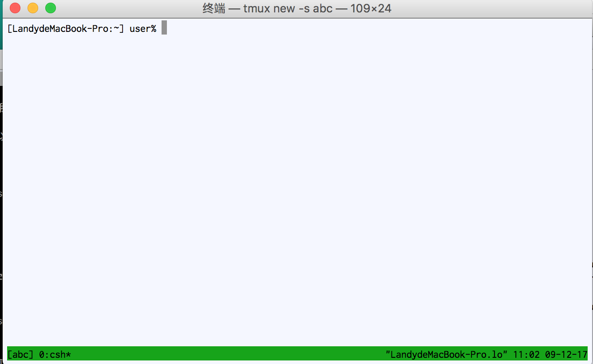

Tmux introduction
什么是Tmux?
Tmux可以理解为是一个terminal控制器,是对我们的terminal的扩展,同时我们可以利用它来建立自己的一套workflow. 先上一张图,感受一下.

Terminal的上半部分是打开了vim准备编辑,下半部分竖直拆分成2个部分.
为什么要用Tmux?
原因一,在一个Terminal上实现了多窗口控制,便于写代码同时调试;
原因二,Tmux为我们在后台保存了一个进程,记录了我们当前的窗口状态,即使关闭这个Terminal,只要下次再打开Tmux,立刻恢复退出前的状态.
原因三,我们可以给Tmux提供一组配置文件,这样可以在每次建立窗口前,预先设置好环境,提高了工作效率.
怎么用Tmux?
首先,先建立一个Tmux进程,这里有专门的术语–session.
tmux new-session -t abc
我们通过上面的命令得到了一个Tmux session,名字叫abc.
这个时候Terminal底部的绿色状态栏提示我们,目前是在一个Tmux的session中.现在我们就可以做一些分割窗口的操作了.Tmux的所有命令都有同样的一个前缀,就是"ctrl+b"1.我们按"ctrl+b",然后按"%",Terminal就被竖直分成了两个部分.这每一部分称为pane.在pane之间来回移动光标的命令是"前缀-o"2.
我们先断开session连接,命令是"前缀-d".
然后在terminal中输入命令，来查看后台有哪些Tmux的session.
tmux ls
结果显示如下,有一个Tmux后台进程,session名为abc.
我们再通过下面的命令,重新连接到session abc去.
tmux attach -t abc
未完待续.
Comments